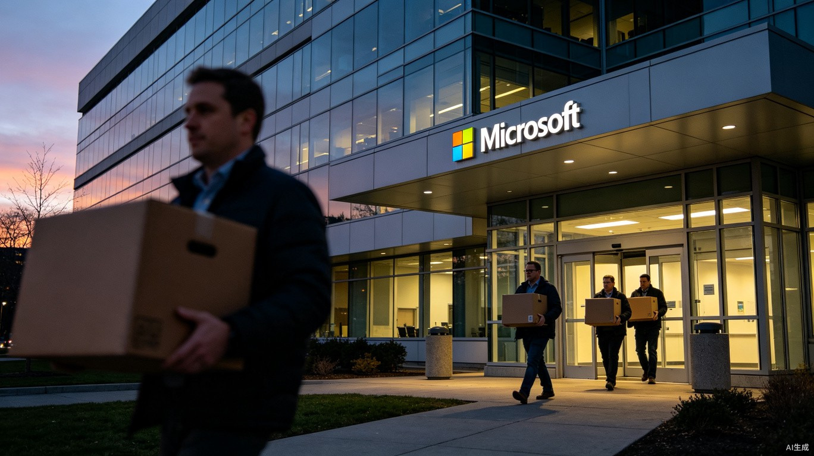

7月6日，微软发了一封全员邮件，全球裁员4800人。
Xbox游戏部门裁掉五分之一，五家工作室直接剥离，最高14层的管理架构一刀砍到3层。商业销售线也大幅缩编，那些按固定话术打电话卖软件许可证的销售岗，整个组都没了。
同一天，另一件事几乎没人在意。微软刚调配完了一个6000人的AI工程团队，正式成立了叫"Frontier Company"的新部门。这6000人不是从天上掉下来的，就是从那些被砍掉的传统业务里腾挪出来的编制和预算。
一边往外推人，一边往里招人。不是微软疯了，是它算明白了。
Xbox游戏部门裁1600人，5家工作室剥离。传统商业销售线大幅缩编。按模板出方案、按话术打电话的标准化执行岗。
Frontier Company，6000名资深工程师+行业专家。工程师直接驻扎客户企业内部，帮企业把AI真正用起来。首批客户包括伦敦证券交易所、联合利华。
说真的，我看到很多人第一反应是"AI替代人"，微软自己也这么暗示，首席人力官Amy Coleman的原话是"AI正在改变工作完成方式"。
这话听着有点刺耳但只说对了一半。被裁掉的那些销售、运维、初级顾问，不是被Claude或GPT直接干掉的，是被一种全新的业务模式给置换掉的。
怎么说呢，你想想看，过去微软是怎么赚钱的。卖Office许可证，按人头收费，卖Azure云计算，按API调用量计费，卖Copilot订阅，按月收费。这套模式跑了二十年，养活了十几万员工。
但这套模式现在跑不动了。IDC 2025年的调研数据很扎心，68%的企业已经用上了生成式AI，但只有22%能靠它赚到钱。买了一堆AI工具之后才发现，自家数据一团糟、业务流程老旧到感人、内部系统之间完全不互通，AI根本跑不起来产生实际价值。
微软自己最清楚这件事，因为他们就是那个卖工具的人。Copilot卖了三年，他们发现大量客户买了之后用不起来。订阅费照付，价值提取几乎为零。这就像你卖了一台高端跑步机给一个从不锻炼的人，他每个月还在付月供，但跑步机上已经挂满了衣服。
所以他们换了一个打法，不再卖工具，改卖结果。

Frontier Company做的一件事业内叫FDE，前沿部署工程。说白了就是，工程师直接驻扎到你公司里去。
不是远程开个会，不是派个销售跟你聊需求，是真人坐在你旁边，跟你业务部门的人一起上班，摸透你的数据怎么流的、审批链怎么走的、哪个系统的API是坏的、哪个业务流程里全是人工操作。然后现场搭系统、做微调、持续迭代。
而且客户保留所有开发成果的知识产权，核心数据不用回传给微软。
这玩意儿为什么重要？因为它直接戳中了AI商业化最大的那个死穴。之前所有科技公司都在拼谁的模型参数大、谁Benchmark分数高，但现在赛道的终点已经变了，谁能帮企业把AI用起来赚到钱，谁才能拿到真金白银的订单。
亚马逊云科技比微软还早两天，掏了10亿美元建了同样的FDE部门，计划配数千名前线工程师跟微软正面抢客户。OpenAI和Anthropic也拉着咨询公司在做类似的事。
战火已经从上游的算力和模型，烧到了下游企业的业务车间里。
你可能觉得这些数字离你很远。但我想让你想想一个人。
假设有一个在微软Xbox做了八年的制作人，西雅图，两个孩子，房贷还有十七年。他不是程序员，也不是高管，是那种负责把游戏开发进度跟发行商对接、协调各工作室排期的中间人。这个岗位需要的是耐心、人际关系和经验，不是技术能力。
7月6日他收到了那封邮件。
我知道这种场景听起来很 cliché，但每年确实有十几万个这样的真实故事在发生。2026年上半年全球科技行业已经有近15.4万人失去工作。Meta、亚马逊、甲骨文都在做同样的事。
但这里有一个被忽略的细节，微软过去一年已经完成了4000多名员工的内部转岗，把他们从增长放缓的业务线调配到AI相关的新岗位上。这次裁掉的4800人里，相当一部分不是直接走人，而是给了转岗窗口期。
问题在于，能转岗的前提是你有被新业务需要的技能。而那些做了十几年的销售、初级顾问、游戏运营中间人，他们的技能模型跟FDE工程师需要的完全不是一套东西。
现在整个AI行业最紧缺的是什么人？你可能以为是训练超大模型的研究科学家，或者是写Prompt的提示工程师。
都不是。是那种能蹲在企业车间里，把AI工具和真实业务流程打通的架桥工程师。
这类人需要同时懂两套语言，一套是技术语言，知道模型能干什么不能干什么、数据怎么清洗、API怎么对接。另一套是业务语言，知道企业的审批流程为什么要这么设计、哪个环节有合规红线、哪个系统是十年前留下的历史包袱没人敢动。
能把这两种语言翻译成同一套方案的人，现在成了所有大厂抢着要的核心资源。
说真的我也不确定这种岗位能热多久，也许两年后FDE变成了标准服务，人人都能做。但在2026年这个AI落地的拐点上，它确实是最值钱的技能。
同一天，7月6日，还有一件事发生了。美国财政部内部流出了一份报告草案，把现在的AI市场跟2000年的互联网泡沫做了对比。
这份报告由财政部的职业分析师写给部长和美联储高层的，和特朗普政府公开场合的"AI万岁"调子完全相反。报告说AI公司已经比当年的互联网企业更深地绑定了美国经济，一旦增长不及预期，冲击波会传导到银行、对冲基金、私人信贷、芯片制造商和公用事业公司。
财政部的发言人立刻否定了这份报告，说"不代表官方立场"。
你可能觉得这跟微软裁员有什么关系？关系很大。
微软一边裁员一边砸钱建AI新军，本质上是把赌注从"模型竞赛"转移到了"落地变现"。而财政部那份报告恰恰在警告，如果整个行业不能证明AI能带来真实的生产率提升，现在的投入就会变成泡沫。
微软不是在赌AI会赢，它是在赌自己能比别人更快地把AI变成钱。这比赌模型更聪明，也比赌模型更难。
聊到这里我突然想起一个事。2000年互联网泡沫破裂的时候，Cisco裁了8500人，Intel裁了5000人，HP裁了6000人。那些公司后来活下来了，但活下来的方式不是回到老路上继续卖路由器和CPU，是找到了全新的业务增长点。互联网泡沫的废墟上长出了云计算、SaaS和移动互联网。
现在AI行业也在经历类似的洗牌，只不过这次洗掉的不是公司，是岗位和技能模型。
回到那个做了八年Xbox的制作人。他手里那个纸箱里装的是什么？不是文件，不是电脑，是八年的行业经验和人际关系。这些东西在旧的业务模型里很值钱，在新的模型里，需要换一种方式去变现。
这事儿说起来很轻巧，做起来，可能得扒掉一层皮。